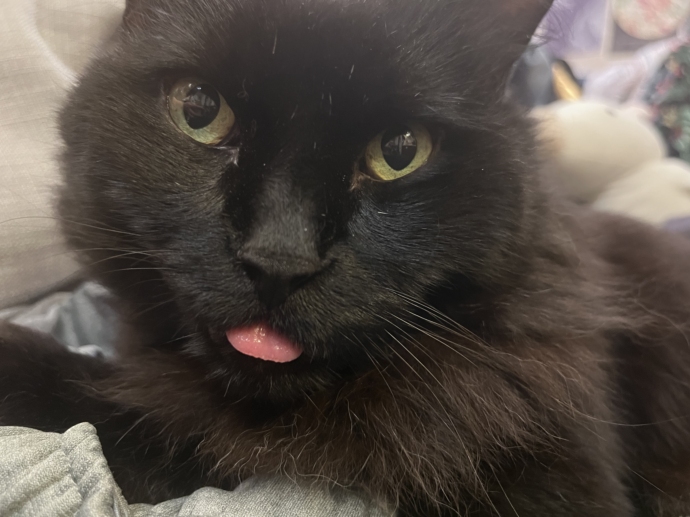

Name
Mr. Daisy Mendoza
Pronouns
he/him
Likes
Treats, being pet, catnip, laps, scratching the couch, eating hair, sleeping, Doritos, cheek rubs
Dislikes
Vacuums, his carrier, not being pet, new people, knocking on doors, paw touches, tummy touches
Fun Fact
He has a single white spot on his shoulder!